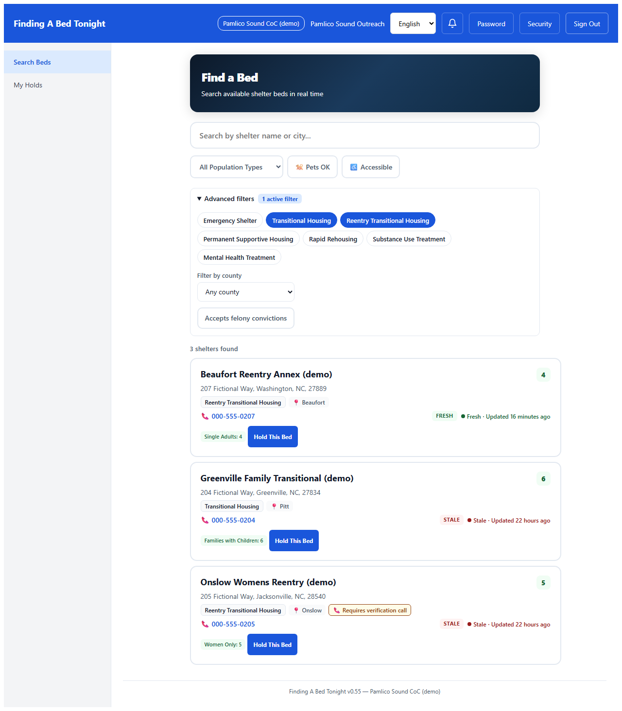
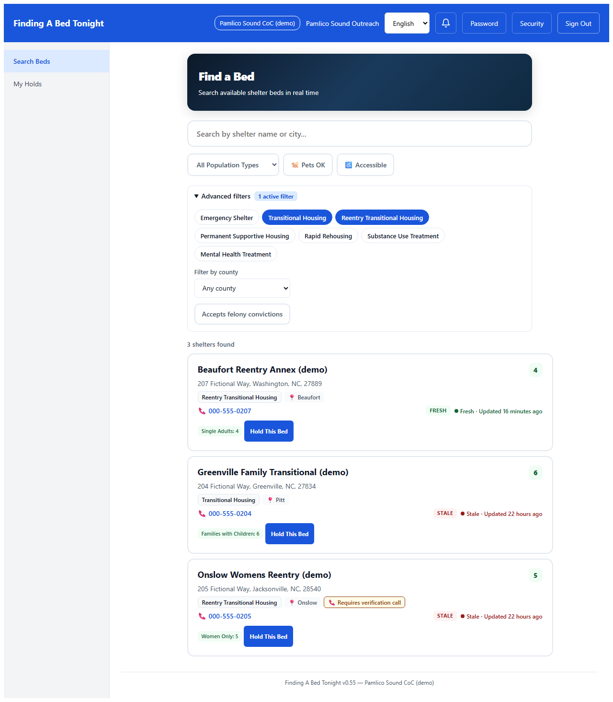
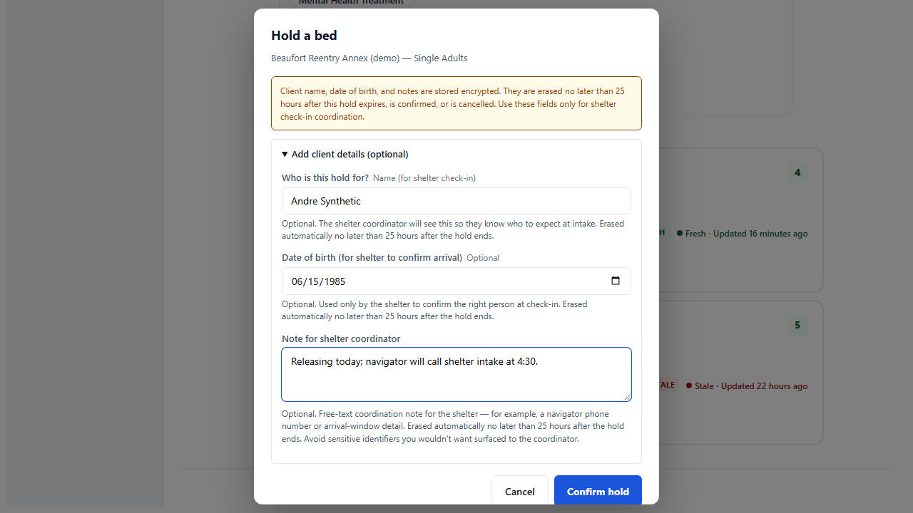
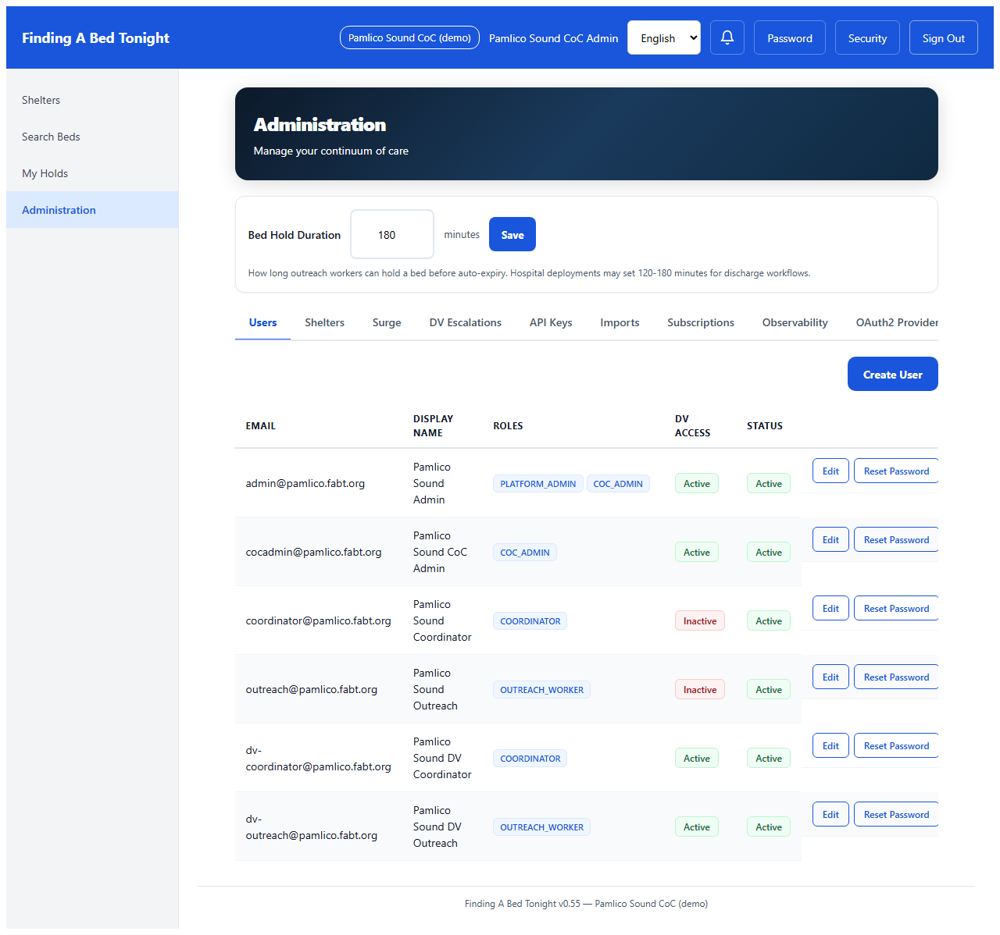
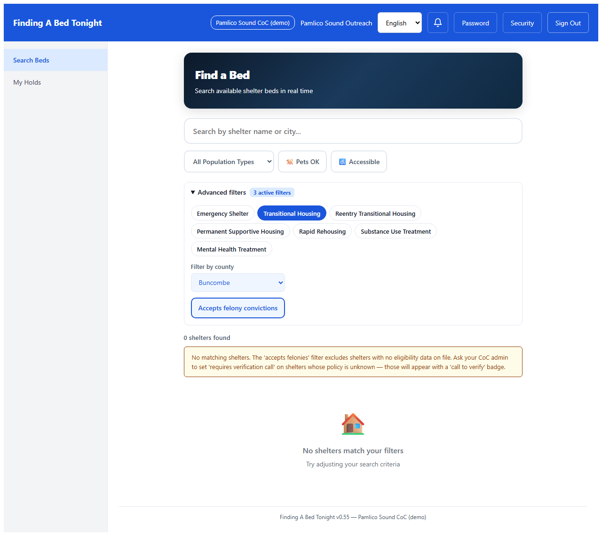

Reentry on release day: a navigator’s day with FABT
A walkthrough of the workflow a reentry navigator follows in Finding A Bed Tonight when the bed has to be found before the intake window closes — and what the platform does and does not do.
Capability deep-dive · 6 screenshots
It’s the afternoon Andre is getting out. His navigator has worked toward this day for weeks. The release paperwork is in. The bus ticket is in. The thing that isn’t in is a confirmed bed for tonight. The shelter the navigator has been calling closes intake at 5. There are two hours left.
1. The morning Andre walks out
The navigator opens FABT because the deadline moved. The phone has been ringing since 9. Most of the calls are routine; one was from the prison social worker confirming the release time has slipped from noon to 3:45. The math: by the time Andre is processed out and on the road, the shelter the navigator was working with all week will be inside its 5 o’clock cutoff.
This is what the platform is for. Not the rest of the work — not the clothes, not the ride, not the conversation about the first 48 hours. Just the bed. Just the question: which shelter in this county can hold a bed for Andre tonight, and which one will pick up the phone in the next 90 minutes?
2. What the navigator sees in FABT
Reentry holds aren’t every shelter’s shape of work. Some shelters take everyone; some have specific eligibility — criminal record policy, sobriety requirements, intake hours that don’t match a release-day timeline. The navigator filters down to the shape they’re actually looking for: shelters across the CoC’s coverage area that have a transitional or reentry-transitional designation. Active chips render filled-solid; inactive chips render outline-only, so the active filter set is visible without relying on color. The county dropdown is left wide-open here because Andre is willing to take a bed in any county the navigator’s CoC covers, but on a different day a more constrained search is one click away.
1Filtered search: shelter-type chips and county dropdownReentry navigator
The advanced filters — visible only when this tenant has reentry-mode turned on — give the navigator the three dimensions that matter for this kind of hold: the county the shelter is in, the shelter type the inventory needs to match, and a tri-state toggle for shelters that accept holds for someone with a felony record.

2Filtered results: three shelters, two beds tonightReentry navigator
Three matches across three counties — the inventory the navigator’s CoC covers tonight. Two have beds available right now; the third has its “requires verification call” flag set, which means the navigator needs to speak to the coordinator before the platform will let the hold be placed.

3. Placing the hold
The navigator clicks into the first match to read the eligibility criteria all the way through. This is the page where the platform is asking the navigator to do the navigator’s real work: read carefully. The shelter has spelled out what they accept, what they don’t, and what they’ll need to know at intake. The platform’s job is to surface this honestly; the navigator’s job is to know which of these constraints applies to Andre. For Andre, the relevant question is whether the felony category and the pending-charges status are both covered.
The eligibility section is structured so a navigator can answer one question fast: does this shelter take Andre tonight? The shelter has said it accepts felonies excluding sex offenses, accepts pending charges, and requires sobriety on intake. There is also a free-text policy note that the shelter’s admin maintains directly.
The hold dialog accepts an optional client name, date of birth, and a free-text note — only used so the shelter coordinator knows who to expect at intake. The privacy framing matters. Here’s what happens to those three fields after the hold ends: encrypted at rest with a per-tenant key, and erased automatically no later than 25 hours after the hold reaches a terminal status. The privacy posture renders above the form, not inside a tooltip; the navigator sees it at the moment they decide whether to enter PII.

This part is for the CoC admin reading along: hold-duration is a per-tenant setting, not a navigator-side override.
5CoC-admin context: hold duration is configurableCoC admin
Different CoCs have different operational realities. This CoC’s admin has set hold duration to 180 minutes — the navigator has three hours from the moment of the hold to confirm with the shelter, and the shelter has the same window to accept or decline. The hold gives the navigator three hours; tonight, the shelter’s 5 o’clock intake window is the binding constraint, not the hold duration. The default is 90 minutes; any value the CoC admin chooses applies to all new holds going forward and is recorded in the audit chain.

4. When no shelter in the county matches
The path the navigator hopes for is the one above. The path that doesn’t always work is the one below.
Sometimes the platform doesn’t return a match. A navigator working in this field has put it this way: the platform is honest about “no.” That’s most of what I need it to be honest about. The rest of the work is mine. The county might have one reentry shelter and that one shelter excludes the offense category that applies to the person the navigator is placing. The platform shows that, plainly, on the search page.
6No match available in this county tonightReentry navigator
The platform’s answer is no shelter in this county matches. The navigator’s answer to that is not in the platform — it’s on the phone, in the next county, or back at the prison social worker. The platform’s job ends here; the navigator’s job continues outside it.

5. What this changes — and what it doesn’t
What changed in v0.55: a reentry navigator working a release-day hold can filter shelters by the dimensions that actually apply to reentry intake (county, shelter type, criminal-record policy), can read structured eligibility before placing the hold, and can record an optional client name + DOB + intake note that the shelter coordinator sees at the other end. The PII fields are encrypted at rest, gated behind a per-tenant configuration flag (off by default), and erased automatically no later than 25 hours after the hold reaches a terminal status.
What didn’t change: the platform still doesn’t replace verification, doesn’t predict outcomes, doesn’t share information with anyone the navigator hasn’t routed it to, and doesn’t survive a tenant-level data-rights request. The navigator places the hold; the shelter coordinator confirms by phone. FABT shows eligible options. The eligible options are honest about what they are and what they aren’t.
Privacy posture — in one paragraph
The three optional PII fields (client name, date of birth, free-text note) are encrypted at rest with a per-tenant data-encryption key and erased no later than 25 hours after the hold reaches a terminal status. They are surfaced only to the shelter coordinator who needs to confirm intake and the navigator who placed the hold — never published over HMIS, AsyncAPI, OAuth2 webhooks, or any external system. The fields are not surfaced in the UI or returned by the API for tenants that have not affirmatively enabled features.reentryMode on their tenant configuration; default-off is the production-correct posture.
Designed to support reentry coordination with explicit privacy posture and a default-off PII surface. CoC operators evaluating FABT for reentry workflows should review their own state and federal confidentiality obligations with qualified counsel.